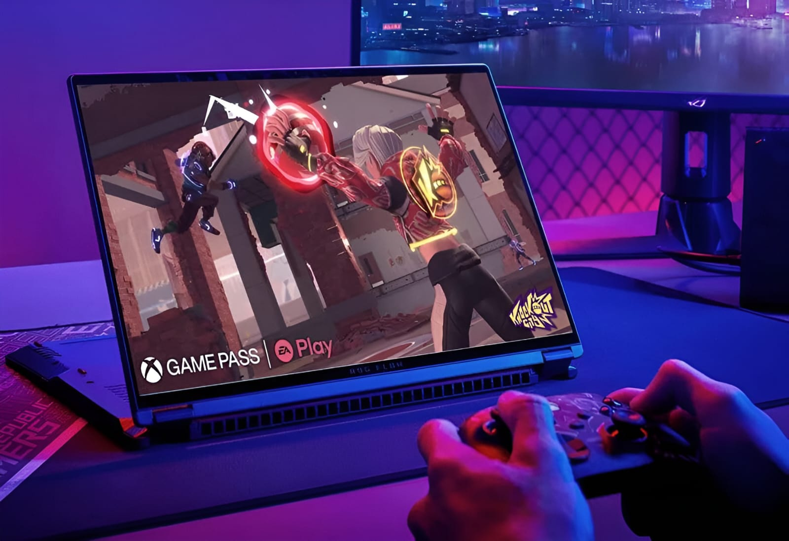

ROG FLOW X16

Juega y crea en cualquier lugar con la increíble potencia y flexibilidad
Juega y crea en cualquier lugar con la increíble potencia y flexibilidad

Crea contenido
Juega con mando

Juega con PC
Haz mucho más mientras juegas

Disfruta de portabilidad y versatilidad sin renunciar a la potencia gaming de Windows 11 Home. El ROG Flow X16 rinde a toda velocidad con el último procesador Intel® Core™ i9-13900H de 13.ª generación. Juega sin miedo con una GPU NVIDIA® GeForce RTX™ 4070 para portátiles. Muévete con libertad y crea, transmite y juega donde te apetezca.

Windows 11 Home
SO
Procesador
i9-13900H
Intel® Core™
NVIDIA® GeForce
RTX™ 4070
GPU para portátiles
Hasta
2 TB PCIe® 4.0
de almacenamiento SSD
Hasta
64 GB a 4800 Hz
de memoria DDR5
MUX Switch
Tecnología

Las GPU NVIDIA® GeForce RTX™ de la serie 40 para portátiles impulsan los portátiles más rápidos del mundo para jugadores y creadores. Con la arquitectura RTX de 3. generación de NVIDIA, estas GPU te proporcionan los gráficos con ray tracing más realistas y funciones de IA de última generación como NVIDIA DLSS 3.0 y un codificador NVENC integrado para realizar streaming sin interrupciones. No importa cómo juegues o crees, confia en la potencia de las GPU NVIDIA® GeForce RTX de la serie 40 para portátiles.

Con NVIDIA® Advanced Optimus, el portátil puede enviar fotogramas automática y directamente de la GPU independiente a la pantalla con MUX Switch, saltándose los gráficos integrados. Esta ruta aumenta el rendimiento un 5- 10% con respecto a equipos sin MUX Switch, lo que te garantiza la mejor experiencia de juego, y todo sin tocar ni un botón

Para obtener más potencia de juego y expansión de E/S, el Flow 213 es compatible con la familia de GPU externas XG Mobile. Conéctalo a la 2023 XG Mobile para liberar la potencia de la flamante GPU NVIDIA® GeForce RTX™ 4090 para portátiles. Con un adaptador de corriente integrado de 330 W, puertos USB adicionales, DisplayPort, HDMI y Ethernet, la XG Mobile significa que estás a solo un puerto de distancia de una estación de combate completamente armada y operativa.

Con una capacidad de hasta 64 GB, normalmente reservada para estaciones de trabajo de gama alta y una memoria ultrarrápida de 4800 MHz, el Flow X16 afronta la multitarea con total tranquilidad. Ambas SO-DIMM se pueden actualizar.

Los juegos, las aplicaciones y los archivos grandes se cargan a velocidades estratosféricas en un SSD PCIe® 4.0 ultrarrápido. Con hasta 2 TB de almacenamiento, tendrás espacio más que de sobra para aplicaciones creativas y montones de juegos, y también para tus trabajos profesionales. Una segunda ranura M.2 SSD admite hasta PCIe 4.0 y RAID 0, lo que te ofrece la flexibilidad de añadir fácilmente más almacenamiento para aumentar la capacidad total o ejecutar un disco de memoria virtual independiente para acelerar la creación de contenido.
Potencia los últimos juegos y la multitarea más exigente con hasta un procesador Intel Core i9-13900H. Esta CPU de clase mundial cuenta con 14 núcleos y 20 subprocesos con una velocidad máxima de reloj mejorada de 5,0 GHz, por lo que es capaz de mantener todos tus juegos en ejecución sin problemas, sin importar cuántas aplicaciones tengas abiertas al mismo tiempo.
El X16 está hecho para los jugadores y, por supuesto, para los desarrolladores de juegos. El X16 puede ejecutar los más recientes motores de juego, como Unity y Autodesk, lo que te permite dar rienda suelta a tu creatividad y tratar de hacer algo nuevo. Si eres artista digital, streamer, editas vídeo o te dedicas al desarrollo de animaciones y juegos, el X16 tiene toda la potencia que necesitas para llevar tus creaciones al siguiente nivel.

Da un salto cuántico en rendimiento en tus juegos y tus aplicaciones creativas gracias a DLSS 3 con tecnología de IA y disfruta de unos mundos de juego vívidos con ray tracing completo.

NVIDIA Studio lleva tus proyectos creativos al siguiente nivel. Libera la RTX y la aceleración de IA en las mejores aplicaciones creativas, usa los controladores NVIDIA Studio para lograr la máxima estabilidad y acelera tu creatividad con un conjunto de herramientas exclusivas.
NVIDIA Max-Q es un avanzado conjunto de tecnologías con IA que optimizan tu sistema para que alcance la máxima eficiencia. Tu portátil, uno de los más rápidos del mundo, será ultrarrápido, fino y silencioso, y tendrá una impresionante autonomía de la batería.
El ROG Flow X16 se basa en años de experiencia de la tecnología Intelligent Cooling para sobrepasar sin descanso los límites de lo que un ordenador ultraportátil es capaz de hacer. Nuestra tecnología Tri-Fan y el disipador térmico de ancho completo transforman el X16 para que no solo sea un portátil delgado y ligero, sino una verdadera máquina gaming. El Flow X16 se pone a la vanguardia de la refrigeración gracias al compuesto térmico de metal líquido Thermal Grizzly, que mejora la transferencia térmica, y la capacidad de permanecer completamente silencioso con la tecnología de refrigeración ambiental de 0 dB

Tecnología
tecnología
Ancho completo
Discipador térmico
0 dB
refrigeración ambiente
Metal líquido
en la CPU
Detrás de todo gran portátil hay una gran solución de refrigeración. Nuestra nueva tecnologia Tri-Fan dirige el aire a través de recortes en el chasis calculados con precisión, que envían el flujo de aire directamente hacia los componentes internos para mantenerlos fríos en todo momento. Un tercer ventilador auxiliar envia el calor adicional de la GPU y la VRAM directamente a los disipadores térmicos, para mantener el portátil frío incluso durante las sesiones de juego o procesos de renderizado de vídeo más largos.

El Flow X16 cuenta con 330 aletas de disipación térmica y cada pila está revestida de cobre ultrafino, con un grosor de tan solo 0,1 mm. Esto permite una mayor densidad y menor resistencia al aire, lo cual proporciona un total de 110 902 mm² de superficie. El nuevo diseño de ancho completo tiene el doble de tamaño que un disipador térmico de portátil corriente y cubre toda la parte trasera del ordenador.
El Flow X16, presentado por primera vez en la Zephyrus G14 2022, incorpora un filtro antipolvo en las rejillas de ventilación. El polvo y las fibras pueden acumularse en el interior de la máquina, lo cual atrapa el calor y provoca una degradación del rendimiento con el paso del tiempo. Un filtro ayuda a mantener el polvo fuera, para que la CPU y la GPU respiren más fácilmente durante años con fluidez y estabilidad.

Nuestros Arc Flow Fans™ tienen aspas curvas con una forma especial para ofrecer el máximo flujo de aire con el mínimo ruido. Nuestro diseño de grosor variable puede llegar a contar con el grosor increíblemente fino de 0,2 mm en la base de los ventiladores antes de expandirse hacia la punta. Esto reduce las turbulencias, ya que las aspas del ventilador aceleran el aire con fuerza centrífuga, por lo que proporcionan una experiencia general más silenciosa.

Nuestros ventiladores utilizan aspas de grosor y forma variables, cambiando gradualmente de una zona de alta a una de baja presión antes de expulsar el aire. Esto reduce las turbulencias y maximiza la eficiencia del flujo de aire en comparación con las aspas de los ventiladores tradicionales. Este nuevo diseño patentado es posible gracias a las más recientes tecnologías de procesamiento de polímeros de cristal líquido, que nos permiten crear aspas de ventilador ultrafinas y resistentes para incrementar la entrada de aire.

El compuesto de metal líquido de Thermal Grizzly reduce las temperaturas de la CPU hasta 13 °C con respecto a la pasta térmica estándar. Aplicar este compuesto a las CPU es un trabajo delicado, así que ROG ha incluido un equipo personalizado para automatizar el proceso con precisión mecánica y ha diseñado una barrera interna patentada para contener el compuesto.

Cinco caloductos alejan el calor no solo de la CPU, la GPU y la VRAM, sino también de los circuitos VRM que les suministran energía. Reducir la temperatura de estos componentes ayuda a mejorar la estabilidad y la fiabilidad a largo plazo.
Disfruta de una refrigeración realmente silenciosa con cargas de trabajo ligeras gracias a la tecnología de refrigeración ambiente de 0 dB. En el modo de funcionamiento silencioso, el sistema de refrigeración desconecta todos los ventiladores durante las tareas cotidianas para disipar el calor de forma pasiva. Esto te permite concentrarte en tu trabajo y sumergirte en las películas con menos distracciones. Si la temperatura de la CPU o la GPU aumenta, los ventiladores se conectan automáticamente.
El Flow X16 viene con una pantalla ROG Nebula HDR Display, fabricada con Mini LED para obtener un contraste más profundo y mayor brillo que los paneles LED tradicionales. Prepárate para deslumbrarte con colores vivos con DCI-P3 al 100 %, con 1100 nits de brillo máximo y 1024 zonas de atenuación local en este impresionante panel VESA DisplayHDR™ 1000. Tanto la pantalla Nebula HDR como la Nebula estándar tienen una relación de aspecto 16:10, Dolby Vision y frecuencias de actualización de 240 Hz con tiempos de respuesta de 3 ms, lo que garantiza una excelente claridad de movimiento e imágenes más envolventes en todos tus juegos.

1024 zonas
de atenuación local
Mini LED
Panel
1100 nits
de brillo máximo
240 Hz/3 ms
de frecuencia de actualización
16:10
relación de aspecto
500 nits
de brillo máximo
QHD
DCI-P3 al 100 %
Gama de colores del estándar cinematográfico
El motor Nebula HDR es un algoritmo de atenuación local a medida que destaca imágenes de gran brillo alucinantes con una profundidad sin igual. El algoritmo, entrenado con un conjunto de instrucciones de más de 150 vídeos y más de 2000 fotos, puede ajustar dinámicamente la iluminación HDR necesaria para reducir el efecto halo alrededor de zonas de atenuación individuales un 25 %.

Escena a escena, fotograrna a fotograma, Dolby Vision mejora el contenido multimedia. La tecnología mejora el video en 4K de alto rango dinámico (HDR) estándar al ajustar de forma dinámica las imágenes para que todas sean más ricas, más brillantes y más vivas. Los creadores pueden filmar y editar sus transmisiones, sus videos y otros contenidos en un formato que suelen usar las profesionales.

Cada pantalla IPS está precalibrada para garantizar que los colores sean los de la paleta Pantone®. Los artistas, los diseñadores y los creadores de contenido pueden añadir contenido de alta calidad a sus trabajos y disfrutar de imágenes más ricas en los juegos, todo en el mismo equipo.

Aunque el espacio de color sRGB es el estándar para la mayoría de las imágenes digitales, solo representa aproximadamente el 75% del espectro DCI-P3 usado en la filmación de películas profesional. Las pantallas con cobertura DCI-P3 total ofrecen una amplia gama de colores para obtener imágenes más vívidas, y te permiten ver las peliculas y demás contenidos multimedia exactamente como deben verse.

Nada rompe tanto la inmersión en un juego como los parones y el desgarro. Las GPU presentan los fotogramas a velocidades variables, pero las pantallas suelen actualizarse con un clip constante, por lo que pueden desincronizarse y causar hitching y artefactos que te sacan de la acción. Con NVIDIA® G-SYNC, la frecuencia de actualización de lapantalla se sincroniza con los fotogramas por segundo de la GPU para eliminar el tearing, minimizar los parones y reducir el retraso de entrada. Prepárate para jugar de una forma más natural que nunca.

La certificación DisplayHDR 1000 de VESA garantiza la tecnología HDR en toda la gama de luminancia (hasta 1000 cd/m²) para proporcionar una gama cromática más amplia y un contraste superior al de los monitores tradicionales. Los blancos más brillantes y los negros más oscuros resaltan los detalles como nunca antes. Para garantizar la precisión del color, cada monitor ROG viene precalibrado de fábrica.

La pantalla táctil del Flow X16 se ha mejorado para 2023 con el nuevo revestimiento Corning® Gorilla® Glass DXC. Este material reduce los reflejos de la superficie a la vez que aumenta la dureza en más de un 40% para una mayor resistencia a los arañazos. Al reducir los reflejos, puedes ajustar el brillo más bajo cuando estés en interiores y utilizar más fácilmente el X16 en ambientes más complicados como exteriores y entornos luminosos.
El Flow X16 se ha diseñado pensando en la versatilidad. Para una experiencia de juego de PC estándar, conecta tu ratón favorito para emparejarlo con el teclado. El teclado cuenta con N-key rollover, una distancia de desplazamiento de 1,7 mm y RGB de una sola zona compatible con Aura Sync, por lo que tiene el mismo conjunto de características de primera calidad que nuestros otros portátiles ROG. Cuando se utiliza en modo tablet, la pantalla táctil de 16" permite disfrutar sin esfuerzo de tus juegos favoritos compatibles con dispositivos móviles y táctiles. Para los juegos compatibles, el X16 también se conecta sin problemas con mandos inalámbricos para proporcionar una nueva forma de jugar ultraportátil. Empareja hasta cuatro mandos y pon el X16 en modo carpa para llevarte contigo los mejores juegos cooperativos allá donde vayas. No importa cómo juegues, el Flow X16 se adapta a tu estilo.
Teclado RGB
de una zona
Compatible con
Mando
inalámbrico
Compatible con
Lápiz óptico
MPP2.0
1,7 mm
de recorrido de tecla
Cuatro teclas
GAMING DE ACCESO RÁPIDO
con función de macro
N-Key
Rollover
Disfruta de un sonido superior vayas donde vayas. Los cuatro altavoces con tecnología Dolby Atmos te sitúan en el centro de la acción. Sube el volumen para disfrutar de un audio más alto y dinámico gracias a los altavoces con amplificador inteligente. La cancelación de ruido bidireccional con IA limpia la entrada y la salida de audio, por lo que las transmisiones, los chats y la grabación son más claros que nunca. Filtra el ruido no deseado para garantizar que tu visión creativa se transmita con claridad. El Flow X16 también cuenta con una cámara Full HD 3DNR, capaz de capturar con claridad tu rostro incluso en condiciones de poca luz, y dispone de compatibilidad total con Windows Hello para un inicio de sesión seguro y cómodo.

3DNR
Cámara FHD
Altavoces con
amplificador inteligente
Cancelación de ruido
bidireccional con IA
Tecnología
Inmersión con
Cuatro altavoces
Configuración
Tres modos para la matriz de micrófonos integrada te proporcionan mayor control sobre tu entrada. El modo cardioide captura el sonido desde delante del portátil y reduce al mínimo la entrada desde detrás, por lo que es ideal para el streaming y el juego. El modo estéreo usa los canales de la derecha y la izquierda para grabar un paisaje sonoro más amplio, adecuado para música en directo y otras experiencias inmersivas. El modo omnidireccional recoge el sonido de todas las direcciones por igual, lo que permite disfrutar de conferencias telefónicas en grupo más claras..

Nuestra avanzada tecnología de cancelación de ruido bidireccional con IA funciona con cualquier dispositivo de entrada, lo que te permite eliminar el ruido de la entrada de tu propio micrófono y de los flujos entrantes. Además, se ejecuta en la CPU, lo que libera la GPU para obtener más FPS. Los ajustes de cancelación de ruido incluso pueden personalizarse por programa, para filtrar aplicaciones específicas como el chat de voz sin afectar al audio del juego, que no quieres tocar.

Un audio más rico te sumerge aún más en el mundo de tus juegos y contenidos multimedia. El sonido envolvente virtual de 5.1.2 canales con tecnología Dolby Atmos mejora la inmersión espacial con efectos de sonido más matizados y estratificados que puedes optimizar con modos preestablecidos especialmente ajustados para películas y juegos.
La câmara de infrarrojos Full HD 3DNR garantiza un desbloqueo perfecto compatible con Windows Hello, incluso en condiciones de poca luz.

Portabilidad
Carga rápida


Wifi 6E
El ROG Flow X16 tiene todos los puertos necesarios para una estación de trabajo de gama alta o una estación de batalla. Gestionar varias pantallas con Thunderbolt 4. Conéctate a un televisor de pantalla grande con un puerto HDMI 2.1 dedicado. Carga sobre la marcha con hasta 100 W de suministro de energía a través de USB-C. ¿Necesitas más? Conecta el ROG XG Mobile a través de nuestra interfaz exclusiva para aumentar el rendimiento gráfico y añadir puertos adicionales sobre la marcha. Las opciones versátiles te permiten hacer más en cualquier parte.
USB de tipo C
Thunderbolt 4
MPP2.0
HDMI 2.1
MPP2.0

Cuando quieras cambiar ajustes, supervisar temperaturas o retocar tu portátil, Armoury Crate es tu centro de mando. La supervisión en tiempo real te permite ver lo que están haciendo tu GPU, tu CPU y tu memoria. Puedes ajustar el RGB juego por juego con Aura Sync. Los perfiles de ventilador y alimentación te permiten cambiar la acústica, el suministro de energia y las características térmicas del portátil sobre la marcha. Y exclusivas ofertas de juegos te permiten tener una completa biblioteca en todo momento.

El software ROG GameVisual ofrece seis modos gráficos ajustados con la máxima precisión, diseflados para optimizar tu experiencie visual en géneros específicos de juegos. El modo shooter en primera persona (FPS), por ejemplo, mejora la visibilidad en entomos oscuros, lo que te permite ceer sobre cualquier enemigo que aceche en las sombres. Use Game-visual para obtener la mejor experiencia con cada juego de tu biblioteca.

El cambio automático de modo en los modos silencioso, de rendimiento y turbo es solo el principio de los perfiles de escenario. También puedes definir preferencias para aplicaciones específicas en otros ajustes vitales del sistema, como la configuración de la iluminación y la activación (o no) de la tecla Windows o el panel táctil. Armoury Crate hace ajustes en un instante para adaptarse a la tarea que tienes entre manos, y puedes configurar cada perfil exactamente como quieras.
Juega con estilo con los accesorios ROG. Navega con precisión con el ratón ROG Chakram Core. Sumérgete en un sonido rico y realista con los auriculares gaming ROG Delta. Completa tu carga sobre la marcha con un adaptador PD de hasta 100 W. Llévalo todo contigo en una resistente mochila ROG Ranger de 15" con detalles RGB.